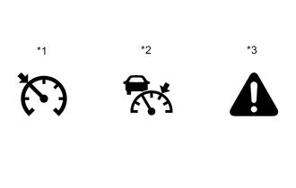
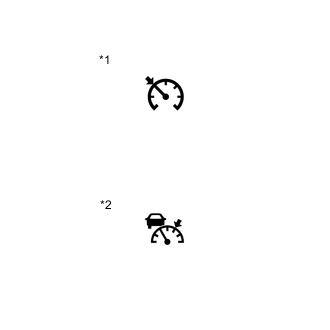

DIAGNOSIS FUNCTION

| *1 | Cruise Control Indicator (Constant Speed Control Mode) |
| *2 | Cruise Control Indicator (Vehicle-to-vehicle Distance Control Mode) |
| *3 | Master Warning Light |
The diagnosis function turns off the cruise control indicator, illuminates the master warning light and displays a warning message when a malfunction is detected. When a malfunction is detected in the dynamic radar cruise control system, DTCs are stored in the hybrid vehicle control ECU or driving support ECU assembly.
Note
If DTCs related to the communication system are stored, "Check Cruise Control System Visit Your Dealer", which is displayed in the combination meter assembly, disappears when the system returns to normal.
If DTCs not related to the communication system are stored, "Check Cruise Control System Visit Your Dealer", which is displayed in the combination meter assembly, disappears when the power switch is turned off then back on (IG) after the system returns to normal.
DESCRIPTION
The hybrid vehicle control ECU and driving support ECU assembly control the dynamic radar cruise control system of the vehicle. The data and DTCs relating to the dynamic radar cruise control system can be read from the DLC3 of the vehicle. Use the GTS to check and solve the problem.
CHECK DLC3
Check the DLC3.
CHECK INDICATOR
Turn the power switch on (IG).

| *1 | Cruise Control Indicator (Constant Speed Control Mode) |
| *2 | Cruise Control Indicator (Vehicle-to-vehicle Distance Control Mode) |
Check that the cruise control indicator illuminates when the dynamic radar cruise control system is turned on using the cruise control main switch (ON/OFF button), and that the indicator turns off when the dynamic radar cruise control system is turned off using the cruise control main switch (ON/OFF button).